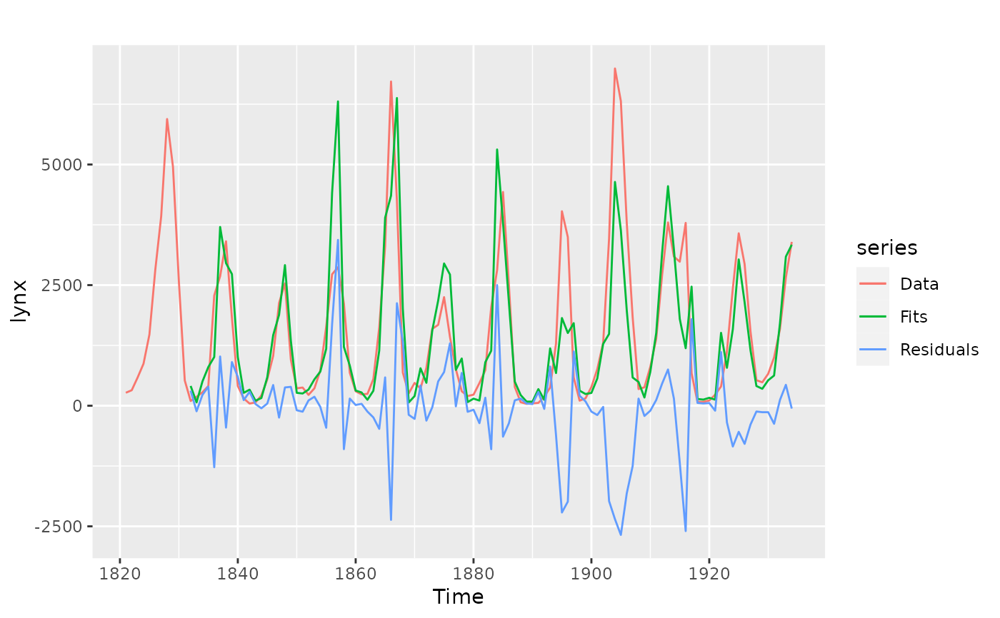

CVar computes the errors obtained by applying an autoregressive
modelling function to subsets of the time series y using k-fold
cross-validation as described in Bergmeir, Hyndman and Koo (2015). It also
applies a Ljung-Box test to the residuals. If this test is significant
(see returned pvalue), there is serial correlation in the residuals and the
model can be considered to be underfitting the data. In this case, the
cross-validated errors can underestimate the generalization error and should
not be used.
CVar(
y,
k = 10,
FUN = nnetar,
cvtrace = FALSE,
blocked = FALSE,
LBlags = 24,
...
)Arguments
- y
Univariate time series
- k
Number of folds to use for cross-validation.
- FUN
Function to fit an autoregressive model. Currently, it only works with the
nnetarfunction.- cvtrace
Provide progress information.
- blocked
choose folds randomly or as blocks?
- LBlags
lags for the Ljung-Box test, defaults to 24, for yearly series can be set to 20
- ...
Other arguments are passed to
FUN.
Value
A list containing information about the model and accuracy for each fold, plus other summary information computed across folds.
References
Bergmeir, C., Hyndman, R.J., Koo, B. (2018) A note on the validity of cross-validation for evaluating time series prediction. Computational Statistics & Data Analysis, 120, 70-83. https://robjhyndman.com/publications/cv-time-series/.
Examples
modelcv <- CVar(lynx, k=5, lambda=0.15)
print(modelcv)
#> Series: lynx
#> Call: CVar(y = lynx, k = 5, lambda = 0.15)
#>
#> 5-fold cross-validation
#> Mean SD
#> ME -155.5436190 317.3328203
#> RMSE 987.4893918 216.2519879
#> MAE 610.2448468 117.8289779
#> MPE -28.9237362 22.7400877
#> MAPE 61.1495083 18.0606473
#> ACF1 -0.1390840 0.2698244
#> Theil's U 0.9596969 0.6337667
#>
#> p-value of Ljung-Box test of residuals is 0.7859724
#> if this value is significant (<0.05),
#> the result of the cross-validation should not be used
#> as the model is underfitting the data.
print(modelcv$fold1)
#> $model
#> Series: y
#> Model: NNAR(11,6)
#> Call: FUN(y = y, lambda = 0.15, subset = trainset)
#>
#> Average of 20 networks, each of which is
#> a 11-6-1 network with 79 weights
#> options were - linear output units
#>
#> sigma^2 estimated as 0.08434
#>
#> $accuracy
#> ME RMSE MAE MPE MAPE ACF1 Theil's U
#> Test set -454.4073 1119.844 708.0528 -63.61115 85.06339 0.1589167 0.4415375
#>
#> $testfit
#> Time Series:
#> Start = 1821
#> End = 1934
#> Frequency = 1
#> [1] NA NA NA NA NA NA
#> [7] NA NA NA NA NA 104.44533
#> [13] 33.36737 433.59620 403.83920 2260.56221 2853.05777 3106.85480
#> [19] 2081.26034 411.92954 152.48092 49.53722 67.84627 207.32834
#> [25] 544.03323 1085.13039 2231.58803 4317.51258 941.90439 363.39555
#> [31] 386.36821 402.83446 358.64102 722.89977 1606.55286 2822.71975
#> [37] 3210.17007 2112.67570 504.95824 285.18331 248.02692 242.59949
#> [43] 532.41272 1539.61682 3086.64285 3603.58060 3840.97811 705.25843
#> [49] 247.98178 416.27948 370.09535 692.09150 1631.16779 1702.48646
#> [55] 2320.61913 1915.06342 753.24133 304.32781 200.66838 230.02980
#> [61] 475.00338 776.12369 2095.31457 3057.19884 4057.42008 2536.66883
#> [67] 394.22838 82.03310 64.71932 49.46424 63.14596 188.04470
#> [73] 371.91564 1260.59645 3804.13024 3471.71684 589.95536 196.75589
#> [79] 151.58191 237.69285 717.87654 1297.34940 3372.38144 6827.93704
#> [85] 3394.00489 3617.98674 414.31352 363.36281 353.46000 596.28770
#> [91] 902.95979 1709.40934 3439.66766 3184.07999 2306.14321 3484.99375
#> [97] 683.14290 82.24621 77.97478 108.74209 223.67906 401.43140
#> [103] 945.90994 2460.35043 3614.38806 2213.12459 368.24019 520.08030
#> [109] 488.34443 659.21258 999.44686 1590.39133 2865.48099 3449.40049
#>
#> $testset
#> [1] 1 13 14 18 28 32 39 46 52 55 56 69 78 80 85 87 90 91 92
#> [20] 95 103 106 107
#>
library(ggplot2)
autoplot(lynx, series="Data") +
autolayer(modelcv$testfit, series="Fits") +
autolayer(modelcv$residuals, series="Residuals")
#> Warning: Removed 11 rows containing missing values (`geom_line()`).
#> Warning: Removed 11 rows containing missing values (`geom_line()`).

ggAcf(modelcv$residuals)